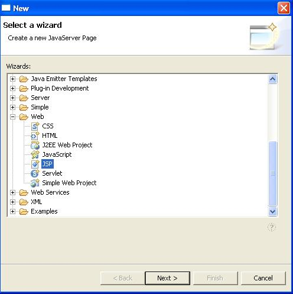
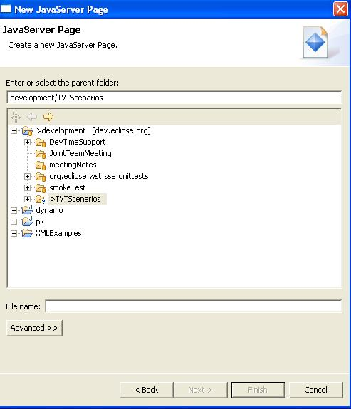
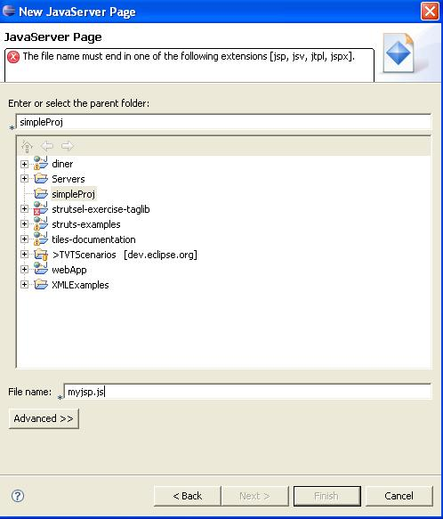
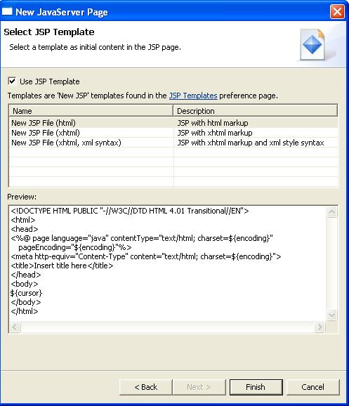

New JSP File Wizard
Steps:
- Go to File ->New ->Other ->Web and select JSP
- Verify description of JSP wizard, Create a new JavaServer page.

- Click the Next button
- Verify the following in the New JavaServer Page dialog:
- New JavaServer Page
- JavaServer Page
- Create a new JavaServer Page
Note: Other translations are covered by IES.

- Begin typing in a file name
- Verify the error message that appears.

- End the file name with .jsp then press the Next button.
- Verify everything on the Select JSP Template dialog except the
Back, Next, Finish, Cancel buttons (those are covered by IES).

- Press Cancel to leave the wizard.